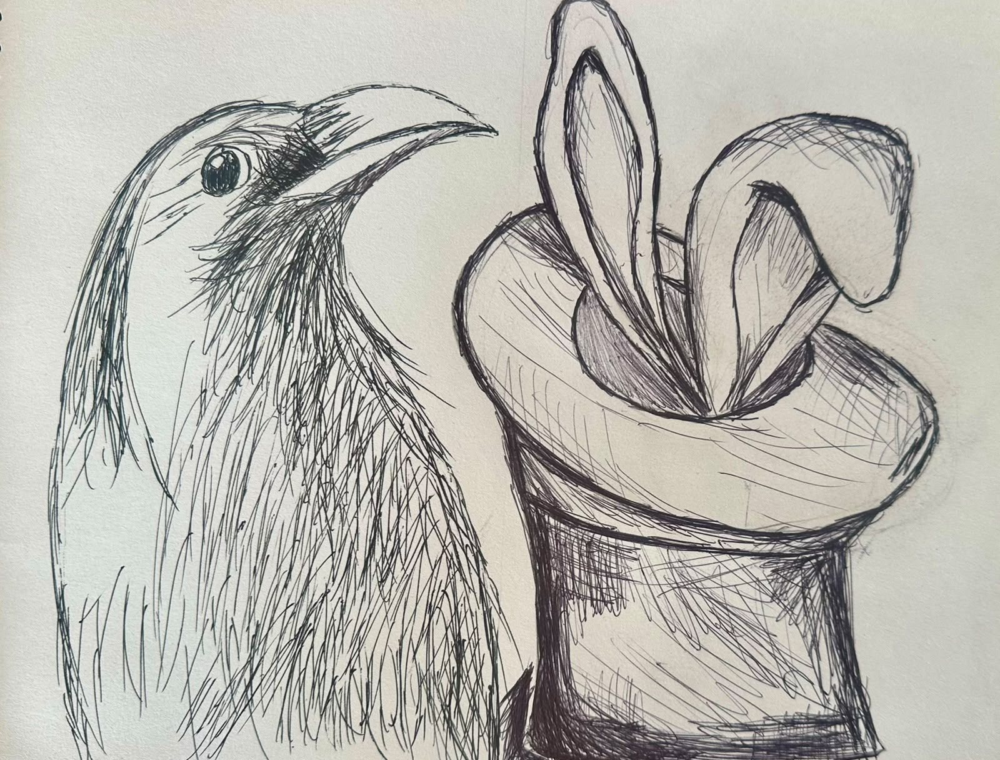

Licencia Creative Commons Zero (CC0).
La técnica de pluma es un método de expresión gráfica milenario que consiste en trazar líneas, tramas y sombras sobre una superficie utilizando una pluma con tinta fluida. Históricamente se realizaba con plumas de ave (como gansos o cisnes) y tinta de calamar o china, evolucionando posteriormente hacia las plumas metálicas con mango, las plumas estilográficas y los rotuladores de punta fina actuales. Es una técnica sumamente expresiva que destaca por la permanencia y la intensidad de sus trazos.
Principales características
- Alto contraste y permanencia: Utiliza tintas oscuras (generalmente negras o sepia) sobre fondos claros, lo que genera un contraste visual muy potente y nítido. Además, al secarse, la tinta suele ser permanente y resistente al paso del tiempo.
- Irreversibilidad del trazo: A diferencia del lápiz, la tinta no se puede borrar. Cada línea es definitiva, lo que exige seguridad y precisión por parte del artista, aunque esto también aporta frescura y espontaneidad a la obra.
- Dominio de la línea y la trama: El volumen, la profundidad y las sombras no se consiguen difuminando (como el grafito), sino mediante la modulación del grosor de la línea y el uso de tramas (líneas paralelas o cruzadas más juntas o separadas, conocidas como hatching y cross-hatching).
- Versatilidad de estilos: Permite desde un trazo sumamente técnico, limpio y geométrico (como en la arquitectura o la ilustración científica) hasta trazos gestuales, sueltos y expresivos propios del arte contemporáneo o el cómic.
Materiales Necesarios
- Instrumentos de trazado: Pluma clásica (portaplumas y plumillas metálicas): Permite una enorme variedad de trazos según la presión que se ejerza, ya que las puntas metálicas se abren ligeramente.
Pluma estilográfica: Ofrece un flujo de tinta constante y es muy práctica para dibujar en cualquier lugar.
Rotuladores calibrados o de punta fina (fineliners): Una alternativa moderna muy popular que ofrece grosores exactos (por ejemplo, 0.1 mm, 0.3 mm, 0.5 mm) y resulta muy cómoda. - Tinta: Las principales tintas son:
- Tinta china: Es la más tradicional para el uso con plumilla. Es densa, de un negro profundo y, una vez seca, se vuelve resistente al agua (indeleble).. .
- Tintas de colores o estilográficas: Tintas líquidas formuladas específicamente para no obstruir los conductos de la pluma.
- Papel para dibujo: Se requiere un papel de superficie lisa y buen gramaje (de 120 g/m² a 200 g/m² o más).El papel debe ser compacto y satinado para evitar que la tinta se expanda o "se sangre" (creando bordes borrosos o pelusa en el trazo).
- Herramientas auxiliares:
- Lápiz y goma blanda: Se aconseja hacer un boceto previo muy ligero y suave con lápiz para guiar el dibujo antes de entintar definitivamente.
- Papel absorbente o servilletas: Indispensables para limpiar la plumilla del exceso de tinta o secar pequeños accidentes.
Para comprender más sobre el tema observa el siguiente video:
Para comprender más sobre el tema analiza la siguiente información:

¡Es tu turno, realiza la práctica de acuerdo a las indicaciones de tu maestro!